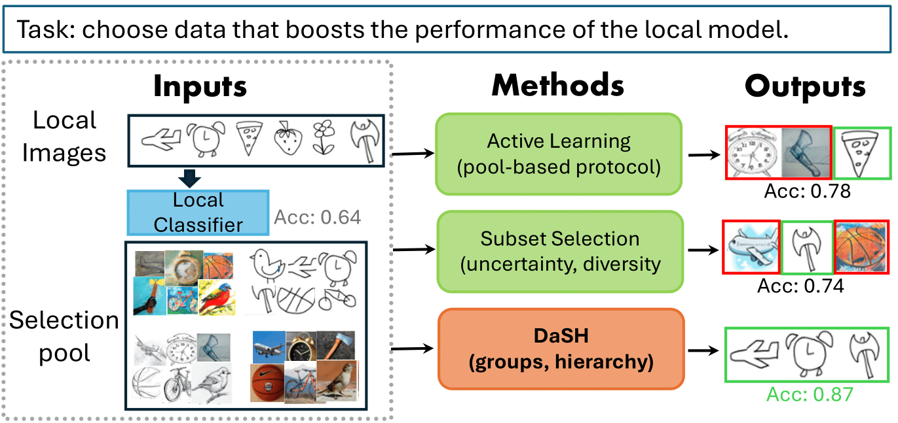
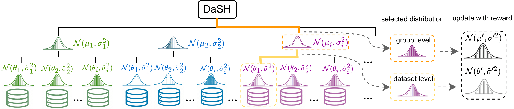
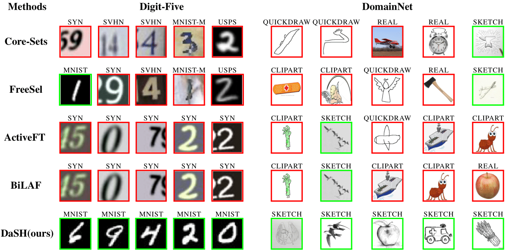

TL;DR
We introduce DaSH, a method for selecting useful datasets from diverse repositories or institutions under limited exploration budgets. By learning which groups and datasets improve a target model, DaSH finds relevant training data efficiently while avoiding less useful sources.

Dataset Selection via Hierarchies
DaSH selects useful training data from a heterogeneous pool by learning which dataset groups and individual datasets improve a target model. Hierarchical selection prioritizes relevant sources under a limited exploration budget.
Abstract
The success of modern machine learning hinges on access to high-quality training data. In many real-world scenarios, such as acquiring data from public repositories or sharing across institutions, data is naturally organized into discrete datasets that vary in relevance, quality, and utility. Selecting which repositories or institutions to search for useful datasets, and which datasets to incorporate into model training are therefore critical decisions, yet most existing methods select individual samples and treat all data as equally relevant, ignoring differences between datasets and their sources. In this work, we formalize the task of dataset selection: selecting entire datasets from a large, heterogeneous pool to improve downstream performance under resource constraints. We propose Dataset Selection via Hierarchies (DaSH), a dataset selection method that models utility at both dataset and group (e.g., collections, institutions) levels, enabling efficient generalization from limited observations. Across two public benchmarks (Digit-Five and DomainNet), DaSH outperforms state-of-the-art data selection baselines by up to 26.2% in accuracy, while requiring significantly fewer exploration steps. Ablations show DaSH is robust to low-resource settings and lack of relevant datasets, making it suitable for scalable and adaptive dataset selection in practical multi-source learning workflows.
Contributions
- We formalize the task of dataset selection from a heterogeneous pool of external datasets, a setting common in real-world workflows such as public data acquisition and cross-institutional collaboration, where data is organized into discrete, variably relevant sources.
- We propose DaSH, the first dataset selection method that models dataset utility through hierarchical inference over groups and datasets, enabling efficient and robust selection under limited feedback.
- We benchmark DaSH against four state-of-the-art data selection methods across two public datasets, demonstrating consistent performance improvements of up to 26.2% on Digit-Five and 10.8% on DomainNet. Ablation studies show DaSH remains robust to grouping noise and scales effectively to large dataset pools, whereas existing methods frequently select irrelevant or low-utility data samples.
DaSH Method

Each dataset and its corresponding group are modeled using Gaussian distributions N(θi, σ̂i2) and N(μi, σi2) for datasets and dataset groups, respectively. The selection process involves choosing a dataset group, followed by a specific dataset within that group. Upon receiving a reward, the posterior distributions for the dataset and the dataset group are updated to N(μ′, σ′2) and N(θ′, σ̂′2) respectively. After training, dataset groups and datasets with higher posterior means are selected.
Quantitative Results
DIGIT-FIVE accuracy
Performance comparison on Digit-Five against baselines (averaged over 5 runs). DaSH results are bold. Orange downward arrows beside scores (↓) indicate accuracy drops relative to DaSH, in percentage points. Across all five domains, DaSH matches the global model, achieving an average accuracy of 78.3%, which is only 0.5 percentage points below the global upper bound (78.8%) and significantly higher than the local lower bound (51.2%).
| Method | Hierarchical | MNIST | SVHN | USPS | MNIST-M | SYN | Average |
|---|---|---|---|---|---|---|---|
| Local | No | 52.7 ±6.5 | 50.9 ±3.4 | 52.2 ±3.2 | 49.4 ±2.4 | 50.9 ±5.1 | 51.2 ±4.1 |
| Global | No | 89.3 ±1.1 | 69.7 ±1.4 | 92.2 ±0.7 | 80.2 ±1.1 | 62.8 ±2.8 | 78.8 ±1.4 |
| Core-sets | No | 75.7 ±2.3 ↓13.8 | 52.8 ±2.7 ↓16.4 | 74.0 ±3.6 ↓17.2 | 60.8 ±2.1 ↓18.1 | 40.8 ±1.9 ↓22.1 | 60.8 ±2.5 ↓17.5 |
| FreeSel | No | 87.6 ±1.2 ↓1.9 | 39.3 ±4.0 ↓29.9 | 29.3 ±3.1 ↓61.9 | 65.4 ±2.2 ↓13.5 | 40.7 ±2.9 ↓22.2 | 52.5 ±2.7 ↓25.8 |
| ActiveFT | No | 58.2 ±1.6 ↓31.3 | 53.6 ±1.6 ↓15.6 | 59.2 ±1.3 ↓32.0 | 48.3 ±0.9 ↓30.6 | 41.4 ±1.5 ↓21.5 | 52.1 ±1.4 ↓26.2 |
| BiLAF | No | 62.6 ±0.5 ↓26.9 | 56.8 ±0.4 ↓12.4 | 67.3 ±0.5 ↓23.9 | 50.1 ±0.5 ↓28.8 | 52.6 ±1.0 ↓10.3 | 57.9 ±0.6 ↓20.4 |
| DaSH | Yes | 89.5 ±0.6 | 69.2 ±3.4 | 91.2 ±0.9 | 78.9 ±0.5 | 62.9 ±1.6 | 78.3 ±1.4 |
DomainNet accuracy
Performance comparison on DomainNet against baselines (averaged over 5 runs). DaSH results are bold. Orange downward arrows beside scores (↓) indicate accuracy drops relative to DaSH, in percentage points. While performance margins are narrower than in Digit-Five DaSH still outperforms all baselines by 3.3–10.8 percentage points.
| Method | Hierarchical | CLIPART | QUICKDRAW | REAL | SKETCH | Average |
|---|---|---|---|---|---|---|
| Local | No | 40.0 ±2.4 | 64.0 ±2.1 | 61.0 ±1.1 | 67.5 ±1.1 | 58.1 ±1.7 |
| Global | No | 78.5 ±0.6 | 86.7 ±0.5 | 88.4 ±0.6 | 72.3 ±0.8 | 81.6 ±1.1 |
| Core-sets | No | 59.1 ±0.9 ↓18.2 | 74.1 ±0.3 ↓12.3 | 80.1 ±0.6 ↓8.3 | 67.6 ±0.4 ↓4.2 | 70.2 ±0.6 ↓10.8 |
| FreeSel | No | 70.1 ±2.1 ↓7.2 | 81.7 ±0.8 ↓4.6 | 85.6 ±0.7 ↓2.8 | 67.2 ±1.3 ↓4.6 | 77.7 ±1.2 ↓3.3 |
| ActiveFT | No | 67.6 ±1.8 ↓9.7 | 78.0 ±1.0 ↓8.3 | 83.8 ±1.1 ↓4.6 | 67.8 ±1.1 ↓4.0 | 74.3 ±1.3 ↓6.7 |
| BiLAF | No | 69.0 ±1.6 ↓8.3 | 81.3 ±0.5 ↓5.0 | 85.8 ±0.5 ↓2.6 | 67.8 ±0.7 ↓4.0 | 76.0 ±0.8 ↓5.0 |
| DaSH | Yes | 77.3 ±0.8 | 86.3 ±1.1 | 88.4 ±0.8 | 71.8 ±0.9 | 81.0 ±0.9 |
Qualitative Results

BibTeX
@inproceedings{xzhou2025dash,
title={Hierarchical Dataset Selection for High-Quality Data Sharing},
author={Zhou, Xiaona and Zeng, Yingyan and Jin, Ran and Lourentzou, Ismini},
booktitle={Proceedings of the AAAI Conference on Artificial Intelligence (AAAI)},
year={2026}
}Template acknowledgements
This site is built upon the work of Nerfies, made available under the Creative Commons Attribution-ShareAlike 4.0 International License. We gratefully acknowledge LLaVA, MiniGPT-4, LLaMa, and Stable Diffusion 2 for open-sourcing their models and code.